the Assassin's creed games ranking
13
Assassin's creed unity (2014)
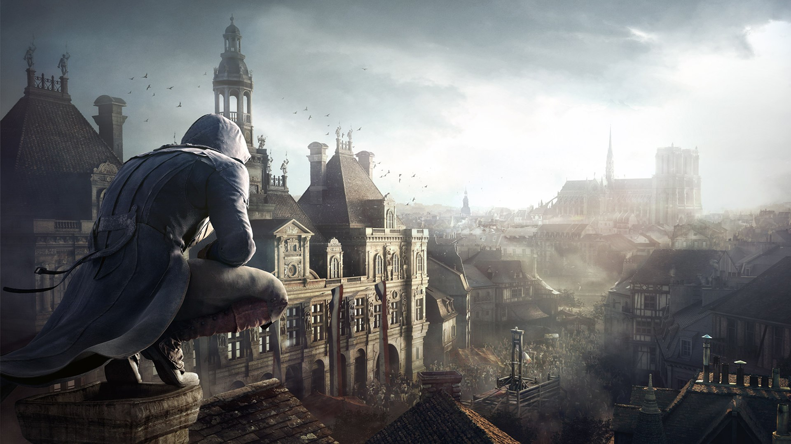
2014 was not a good year for Assassin's Creed. Both releases received the lowest scores of any
console games in the entire franchise, with Assassin's Creed: Unity achieving a score of 71 on
Metacritic. The plot is set during the French Revolution and centers on Arno Victor Dorian's efforts
to expose the true powers behind the revolution. It's a setup AC fans had been hoping to see for
some time, but it was marred with shortcomings.
12
Assassin's Creed Rogue (2014)
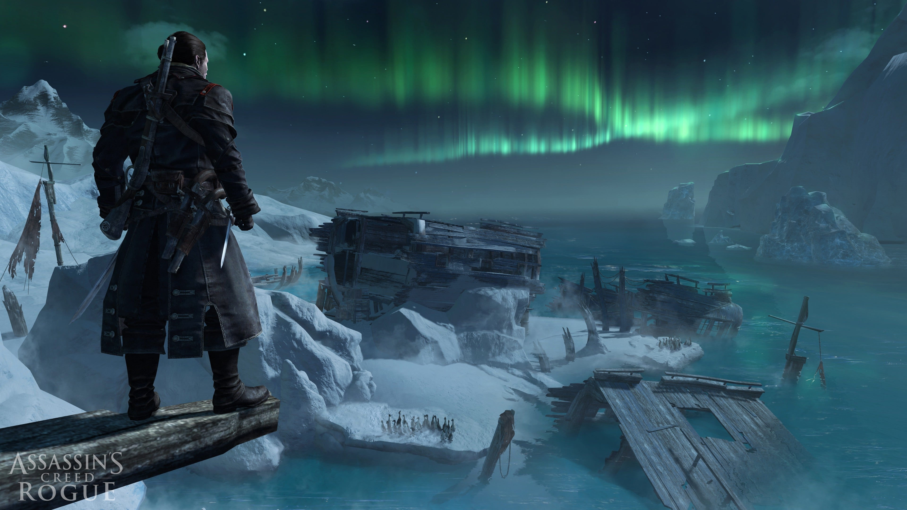
The first of two games released in 2014, Assassin's Creed: Rogue's final mission actually serves as
the prologue for Unity. Set during the Seven Years' War, Rogue follows Shay Patrick Cormac, an
Assassin turned Templar, in his efforts to hunt down and kill members of the Brotherhood who
betrayed him.
11
Assassin's Creed Syndicate (2015)
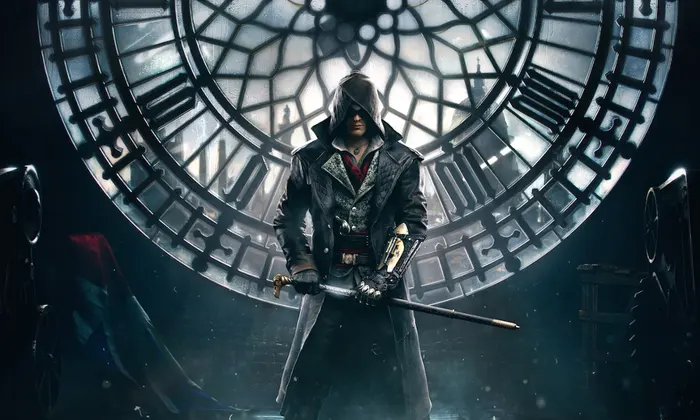
Things improved somewhat in 2015, though the franchise remained at a low point with Assassin's Creed:
Syndicate. With a Metacritic score of 76, firmly set on the "mixed or average reviews" camp,
Syndicate follows twin Assassins Jacob and Evie Frye's attempts to take back their city from Templar
control.
10
Assassin's Creed (2007)
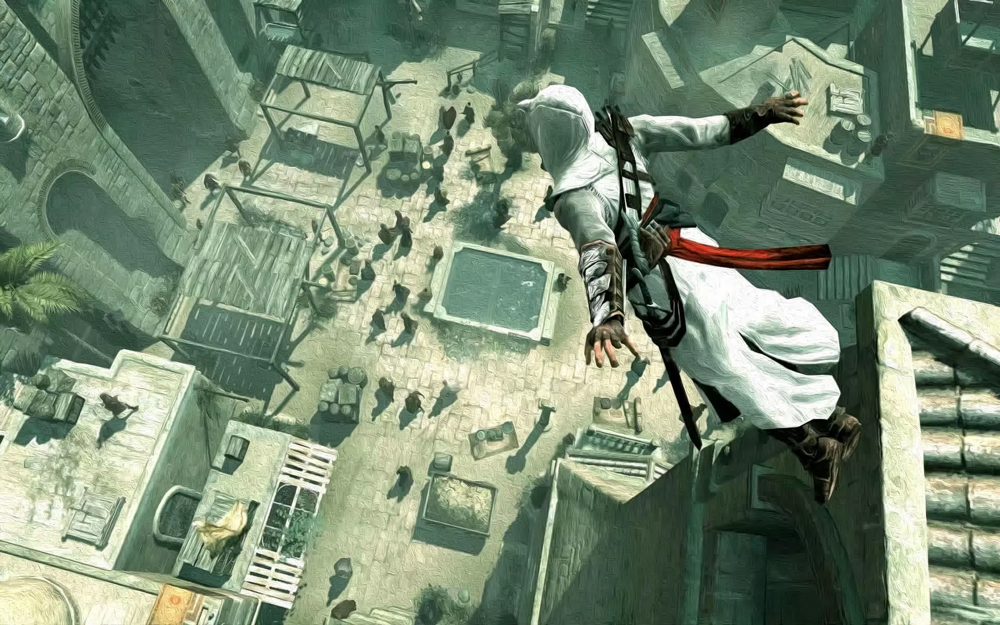
The game that started it all, the first Assassin's Creed showed the promise of the series from the
beginning. It takes place during the Third Crusade in the Holy Land and introduces Desmond Miles,
the franchise's modern-day lead - at least, during the first few games. The central conflict between
Assassins and Templars is also introduced.
09
Assassin's Creed: Revelations (2011)
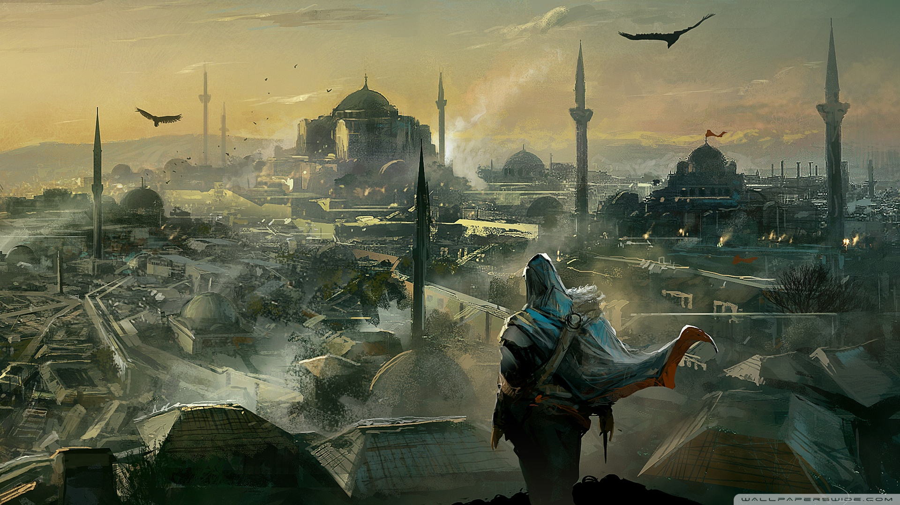
The fourth game in the main series, Revelations continues the story of Desmond Miles, still voiced by
Nolan North, as he tries to avert the 2012 apocalypse. It is mainly set during the 12th and
13th-century in Masyaf, Cappadocia, and Constantinople.
08
Assassin's Creed Odyssey (2018)
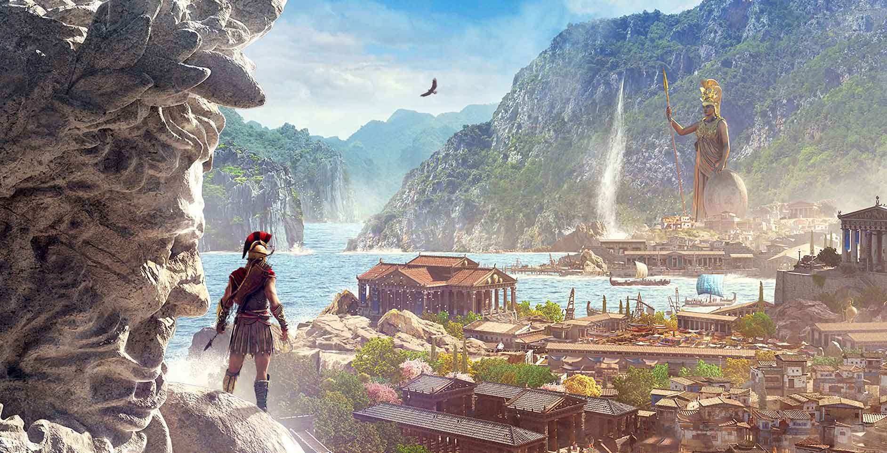
Premiering in 2018, Assassin's Creed: Odyssey brought the franchise into full RPG mode. Odyssey took
players further into the past than ever before, taking place between the years 431-422 BC. Set
against the backdrop of the Peloponnesian War, the player controls a mercenary who fights for both
sides as they attempt to find their family.
07
Assassin's Creed 3 (2012)
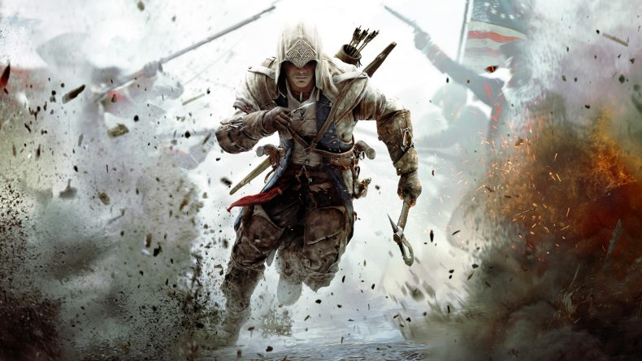
The sequel to Revelations and the fifth game overall, Assassin's Creed 3 continues the apocalypse
storyline and is set during the American Revolution. It received generally positive reviews, with an
average weighted score of 83 on Metacritic.
The game courted some controversy when it was accused of anti-British sentiment while promoting
American nationalism, particularly in its marketing.
06
Assassin's Creed Valhalla (2020)
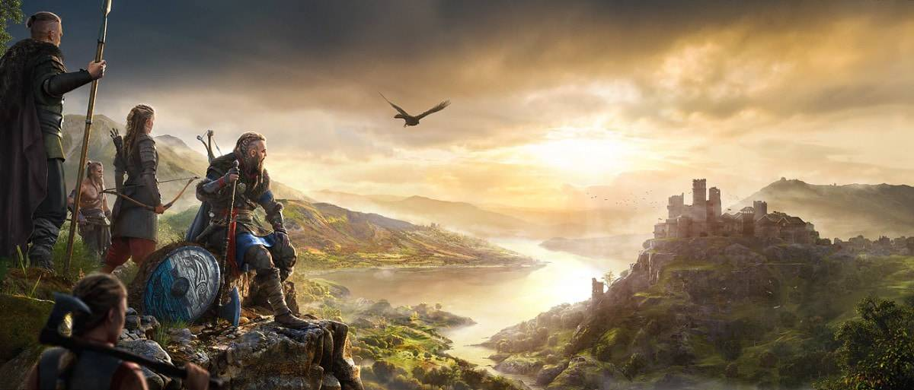
The latest entry into the Assassin's Creed RPG venture, Valhalla serves as a successor to Odyssey.
Set during the Viking Invasion of Britain circa 872 CE, the player assumes control of the Viking
Eivor, who becomes involved in the ancient conflict between Templars and Assassins.
05
Assassin's Creed Mirage (2023)
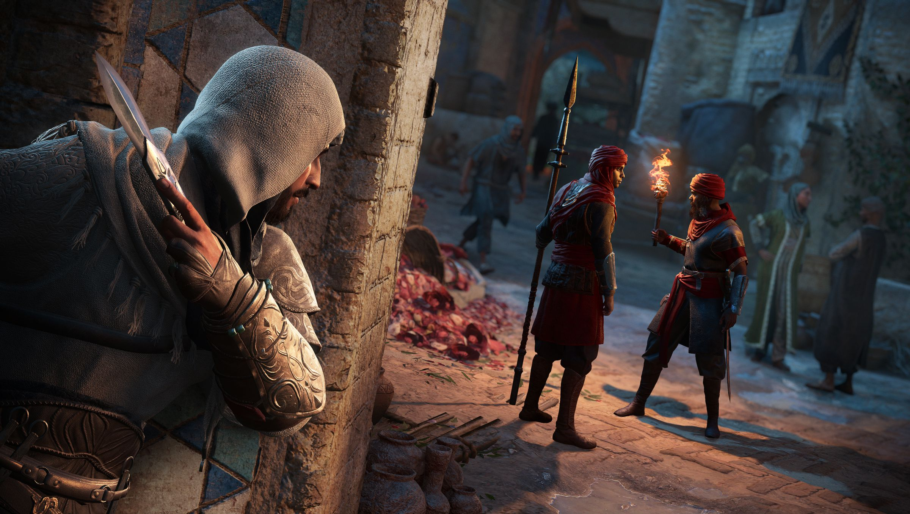
Assassin's Creed Mirage is a prequel to Valhalla, taking place 11 years before in ancient Baghdad,
with its story centering on a street thief turned Hidden One, Basim Ibn Ishaq. Basim plays a key
role in Valhalla, but Mirage is perfectly playable as a standalone experience, using its
predecessor's foundation to deliver a game closer to the classic stealth action the series was known
for originally. The overarching story of Mirage falters in some key places, but its gameplay is a
delightful throwback, and the majority of its immediate narrative within Baghdad more than makes up
for any low points.
04
Assassin's Creed 4: Black Flag (2013)
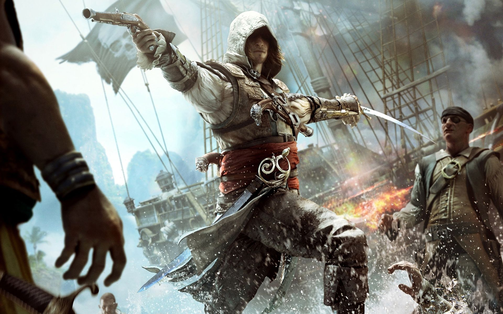
Black Flag represented substantially different gameplay from prior Assassin's Creed games. Set in the
18th-century Caribbean during the Golden Age of Piracy, the game features a great deal of ship-based
action, with particular emphasis on strategy and exploration. Black Flag follows Welsh pirate Edward
Kenway, voiced by Matt Ryan, who stumbles upon the Assassin/Templar conflict.
03
Assassin's Creed: Brotherhood (2010)
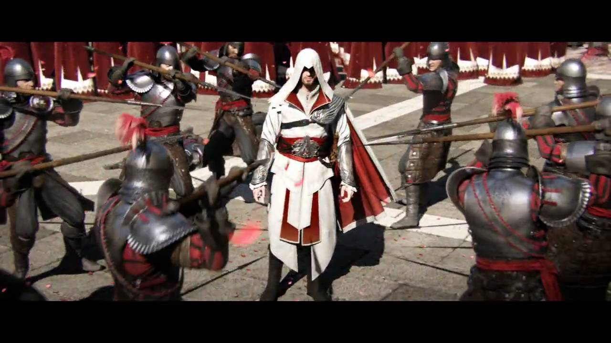
Entering into the golden age of Assassin's Creed, Brotherhood marks the second installment of the
Assassin's Creed trilogy headlined by protagonist Ezio Auditore da Firenze. His quest to restore the
Assassin order continues, as well as his goal of bringing down his enemies, the powerful Borgia
family.
02
Assassin's Creed Origins (2017)

Assassin's Creed: Origins is set in Egypt at the end of the Ptolemaic Period circa 49 BCE. It
explores the conflict between the Hidden Ones, ancestors of the Assassins, and The Order of the
Ancients, who were forerunners of the Templars. It emphasizes role-playing elements but retains the
open-world and stealth elements typical of the franchise.
01
Assassin's Creed 2 (2009)
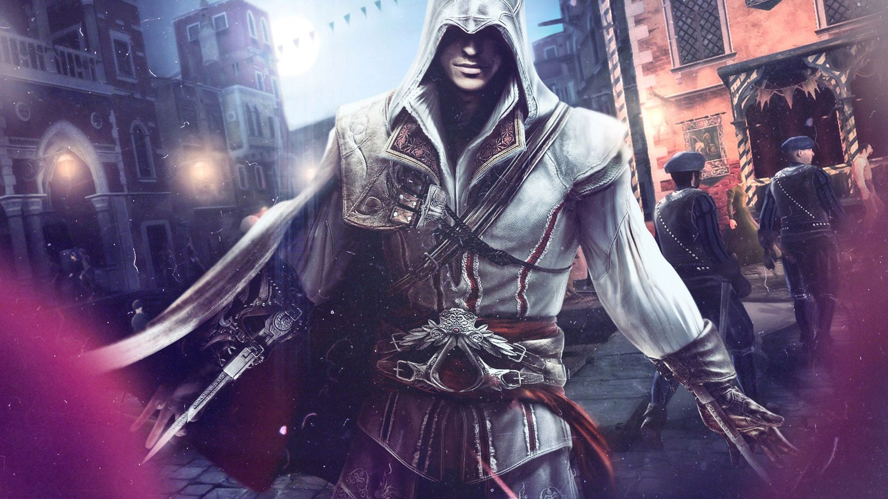
Assassin's Creed 2 turned the franchise into a true force with which to be reckoned in the gaming
world. Taking place at the height of the Italian Renaissance, the plot follows Ezio as he seeks
vengeance against those who betrayed his family, discovering mysteries left behind by an ancient
race known as the First Civilization.